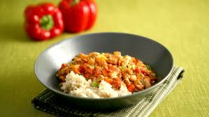
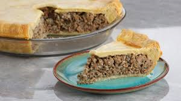

Segundos platos
¡Hola!
En esta página encontrarás una serie de segundos platos que personalmente, me encantan. Estas recetas se encuentran en esta página y no en la de primeros platos ya que los considero más pesados.
¡Espero que disfrutes!
¡Atención!
Recuerda que ninguna de estas recetas me pertenece. Esta es una simple copilación de mis recetas favoritas. Encontrarás la fuente de las recetas al final de cada una o haciendo clic en la foto del plato.
- Pollo a la paprika
- Chili de pollo con pimientos y paprika
- Pastel de carne especiada
- Dificultad: Medio
- Tiempo: Medio
- Raciones: 4
| Ingredientes |
Cantidad |
| Aceite vegetal |
2 cucharadas |
| Contramuslos de pollo sin piel y con hueso |
1,2 kg |
| Cebolla |
300 gramos |
| Pimiento rojo |
200 gramos |
| Harina |
18 gramos |
| Paprika húngara |
20 gramos |
| Caldo de pollo |
500 ml |
| Laurel |
3 hojas |
| Nata agria |
125 ml |
| Zumo de limón |
30 ml |
|
| Sal, pimienta y perejil |
Al gusto |
Preparación
- Lo primero que tenemos que hacer es sellar en la sartén con 2 cucharadas de aceite vegetal 1,2 kg de contramuslos de pollo sin piel, pero con hueso. Reservamos.
- A continuación, añadimos las verduras a la sartén: 300 g de cebolla y 200 g de pimiento rojo, ambos cortados en finas tiras para que se salteen más fácilmente.
- Cuando la cebolla está transparente, incorporamos los otros ingredientes. Primero, 2 cucharadas de harina espolvoreada sobre las verduras para espesar la salsa. Después, 3 cucharadas de paprika húngara dulce que mantendremos en la sartén durante uno o dos minutos, hasta que se impregnen bien las verduras.
- En el siguiente paso, añadimos 500 ml de caldo de pollo y subimos la temperatura del fuego para que el caldo hierva.
- Seguimos sazonando con 3 hojas de laurel.
- Cuando el caldo hierva, reintegramos los contramuslos de pollo a la sartén para que tomen todo el sabor. Tapamos la sartén y bajamos el fuego para que se cocine suavemente durante 30 minutos.
- Pasado este tiempo, para dar el toque agrio de esta receta, agregamos 125 ml de nata agria y 2 cucharadas de zumo de limón a la salsa de paprika.
- Espolvoreamos sobre la salsa paprika un poco de perejil picado para dar color, y añadimos el pollo de nuevo.
- Por último, emplatamos con arroz al vapor al gusto y servimos.

- Dificultad: Medio
- Tiempo: Alto
- Raciones: 6
| Ingredientes |
Cantidad |
| Cebolla |
1 |
| Apio |
1 |
| Zanahoria |
1 |
| Nabo |
1 |
| Pimientos morrones |
- |
| Jalapeño |
Al gusto |
| Dientes de ajos |
2 |
| Pollo congelado |
1 |
| Harina de trigo |
4 cucharadas |
| Comino en polvo |
2 cucharadas |
| Cilantro fresco picado |
1 cucharada |
| Melaza de granada |
- |
| Alubias blancas |
- |
| Vino blanco |
1 taza |
| Tomates |
| Caldo de pollo |
| Sidra de manzana |
| Laurel |
2 hojas |
| Canela en polvo |
1 pizca |
| Pimienta de Sichuán |
1 pizca |
| Arroz |
Para acompañar |
Preparación
- En primer lugar, cortamos en trozos grandes 1 cebolla, 1 apio, 1 zanahoria, 1 nabo y unos pimientos morrones. Picamos muy fino 1 jalapeño y 2 dientes de ajo.
- Troceamos el pollo congelado en piezas del mismo tamaño en el que hemos troceado las verduras.
- En un cuenco con 4 cucharadas de harina de trigo rebozamos los trozos de pollo.
- En una cazuela con aceite caliente doramos un poco el pollo y lo retiramos del fuego.
- Con el fuego apagado, añadimos las verduras que más tardan en hacerse. La cebolla, el apio, la zanahoria y el nabo troceados. Cocinamos hasta que la cebolla esté translúcida, unos 5 minutos.
- Seguidamente añadimos los pimientos, el jalapeño y, por último, los 2 dientes de ajo picados.
- Para darle más sabor, añadimos 2 cucharaditas de comino y 1 de cilantro. Mezclamos con melaza de granada, alubias blancas y 1 taza de vino blanco.
- El líquido debe cubrir las verduras y la carne.
- Por último, agregamos tomates, caldo de pollo, sidra de manzana, un par de hojas de laurel, 1 pizca de canela en polvo y pimienta de Sichuán.
- Cuando rompa a hervir agregamos el pollo ya dorado y dejamos que cueza tapado 45 minutos.
- Servimos con un poco de arroz blanco cocido.

- Dificultad: Medio
- Tiempo: Alto
- Raciones: 6
| Ingredientes |
Cantidad |
| Agua de ternera |
680 gramos |
| Cebolla laminada |
1 taza |
| Ajos rallados |
2 dientes |
| Laurel |
2 hojas |
| Sal de apio |
1 cucharadita |
| Pimienta dulce |
1/4 cucharadita |
| Pimienta |
1/4 cucharadita |
| Salsa Worschestershire |
1 chorrito |
| Caldo de ternera |
1 1/2 taza |
| Patata Yukon Gold rallada |
1 |
| Sal |
| 1 Huevo batido con 2 cucharadas de agua |
Para la masa de tarta salada
| Ingredientes |
Cantidad |
| Harina de repostería |
500 gramos |
| Sal |
1 1/2 cucharaditas |
| Mantequilla sin sal a temperatura ambiente |
255 gramos |
| Agua Fría |
125 ml |
| Huevos |
2 |
Preparación
- En primer lugar, preparamos la masa. En un bol, mezclamos la harina con la sal y la mantequilla con ayuda de una pala de mezclar.
- Cuando los ingredientes estén integrados agregamos los huevos enteros y el agua. Mezclamos hasta conseguir una masa desligada.
- Dejamos reposar la masa en la nevera durante 2 horas, para que la mantequilla se endurezca del todo.
- Por otro lado, preparamos el relleno. Picamos la carne de aguja de ternera y la salteamos en una sartén con aceite a fuego medio-alto.
- Una vez que la carne esté dorada le agregamos la cebolla picada y los dientes de ajo rallados y mezclamos todo.
- Incorporamos el laurel, la sal de apio, las pimientas y la salsa Worcester. Cocinamos durante 5 minutos, hasta que la cebolla esté transparente.
- Entonces, incorporamos el caldo y la patata rallada y cocinamos hasta que todo el líquido se haya absorbido y el relleno haya espesado. Dejamos enfriar del todo a temperatura ambiente. Retiramos el laurel.
- Dividimos la masa en dos y estiramos uno de los discos para la base, dejándolo en 6 mm de grosor.
- Lo ponemos sobre el molde. Rellenamos y estiramos la masa para la tapa. Hacemos un agujero en el centro para que se escape el vapor y tapamos el relleno con ella. Cortamos el borde del tortiere y apretamos los dos bordes, dándole la forma que queramos.
- Pintamos con huevo batido la tourtiere y la horneamos a 190ºC durante 40-45 minutos.
- Pasado el tiempo, dejamos que repose durante 15 minutos.
- Servimos.
Si tienes cualquier duda puedes contactarme escribiendo un cometario.